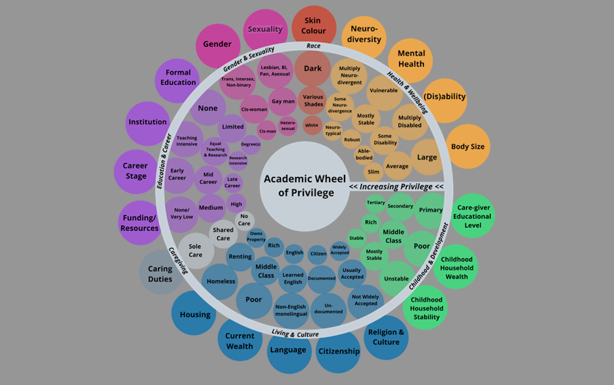

7 Accessibility: Academic privilege and diversity
Even if we were to implement all the open research practices outlined in the previous weeks, our research can’t be fully open unless it’s open to everyone. It isn’t equally easy for everyone to enter a career in academia, due to different kinds of systemic inequality.
This week, we will continue to explore the principle of accessibility(From FORRT Glossary) Accessibility refers to the ease of access and re-use of materials (e.g., data, code, outputs, publications) for academic purposes, particularly the ease of access is afforded to people with a chronic illness, disability and/or neurodivergence. by considering how open research can challenge such inequalities. You will discover how diversity can improve the quality of research and read inspiring examples of how ‘big science’ can be ‘good science’. By the end of this week, you will be ready for Week 8, where we help you to launch yourself into your open research future.
7.1 Privilege in academia
Inequities in academia and research are a big issue, showing up in various ways like gender, race, disability, and elitism. In Weeks 5 and 6, you discovered some examples of how researchers don’t all have equal access to opportunities. This relates to privilegePrivilege is unearned access or advantage, which specific groups of people have because of their membership of a particular social group., often described as unearned access or advantage, which specific groups of people have because of their membership of a particular social group.
Women and minorities often hit roadblocks when it comes to climbing the career ladder or getting access to key resources, which means they’re not as well represented in top positions or in prestigious research projects. People with disabilities face both physical challenges and unhelpful attitudes that can make it tough to fully take part. On top of that, elitism tends to favour those from more privileged backgrounds and institutions, keeping opportunities out of reach for many.
Everyone working and studying in academia has a duty to support researchers who face greater barriers, and to influence their institutions and organisations to make positive change to encourage diversity, equity, and inclusion.

Activity 1
Allow about 10 minutes.
This activity allows you to reflect on your understanding of ‘accessibility(From FORRT Glossary) Accessibility refers to the ease of access and re-use of materials (e.g., data, code, outputs, publications) for academic purposes, particularly the ease of access is afforded to people with a chronic illness, disability and/or neurodivergence.’ and ‘privilege’ in academia. The diagram is adapted from Elsherif et al (2022), whose full article is in the references section.
Look at the academic wheel of privilege above – which parts describe you? Spend ten minutes thinking about whether or not you feel that your experience of academia has been positively or negatively affected by your characteristics.
 In your notes, write down your thoughts.
In your notes, write down your thoughts.
7.2 Diversity
When we think about making research more diverse, we can think about this at three several different levels, for example:
- diversity of samples
- diversity of researchers
- diversity of methodology
- diversity of outputs
It is important that we work towards diversity in each of these domains in our respective fields.
Diversity of samples
In Week 3, you learned about generalisability. One facet of generalisability is whether or not your findings will apply in different cultures and contexts around the world. When collecting human data, a ‘sample’ is the group of people who take part in a research study. It’s important to think about ways to collect diverse samples for our research, as a more diverse sample will represent the wider population better than a less diverse one. Thus, sampling variationThe extent to which the data vary in different samples taken from the same population.n, which means the extent to which the data vary in different samples taken from the same population, is key to collecting and interpreting human data.
Although researchers may not have the funds to collect data in multiple countries, there are smaller ways they can extend their samples, for example:
- Collecting data from multicultural populations in their own country
- Collaborating with a researcher in another country
- Getting involved in big team science
Diversity of researchers
It is important to make sure your research teams are as diverse as possible. This is for reasons of equityEquity means the quality of being fair or impartial. In education, it is understood as presenting all scholars with the same opportunities, which sometimes requires making adjustments for their particular needs., but also because people coming from different perspectives are likely to bring different ideas and insights to the research, making it richer! Here are some examples of ways that a diverse team of researchers can help a project be better:
- A team with members from various backgrounds can offer unique insights into culturally-specific health behaviours or practices in medical research.
- Including researchers with disabilities can lead to innovative solutions for accessibility(From FORRT Glossary) Accessibility refers to the ease of access and re-use of materials (e.g., data, code, outputs, publications) for academic purposes, particularly the ease of access is afforded to people with a chronic illness, disability and/or neurodivergence. in technology design.
- A mix of genders on a team can provide a balanced approach to studying gender differences in workplace dynamics or tackling workplace harassment.
Diversity of methodology
When we have more diverse teams, this can open our eyes to new perspectives and lead to new methodological approaches. It’s possible that your existing methodology cannot just be copied and pasted into a new cultural context, and instead would need many modifications to be culturally appropriate. For instance, research exploring a global reading intervention that only considered reading text from right to left might not be appropriate in cultures where text is read left to right. There are lots of different ways that you can try to diversify your research methodology, for example:
- A quantitative researcher collaborating with a qualitative researcher.
- Talking to colleagues from different fields about how to improve your research methodology.
- Collaborating cross-culturally on a new study design or rolling out an old study design in a new context.
Diversity of outputs
There are many ways of sharing research findings beyond academic journal articles (for example you have already learned about open data and open materials). Reviews themselves can also be made open, see for example the Publish Your Reviews initiative (ASAPBio, 2024). Platforms such as Jisc’s Octopus challenge conventional practices and promote transparency and collaboration through allowing researchers to publish a variety of outputs. Additionally, podcasts, blogs, videos, and social media also offer powerful ways to increase reach and engagement, ensuring research impacts broader audiences. Here are some examples of ways of diversifying the outputs of your research:
- An educational psychologist could write a blog post summarising the results of their study, sharing this blog post with researchers, teachers, and parents/carers.
- A climate scientist could create a short, engaging video explaining their latest findings, tailored for a general audience and shared widely on social media.
- A historian could launch a podcast series discussing key insights from archival research, inviting guest experts and fostering a dialogue with listeners from diverse backgrounds.
Activity 2
Allow about 10 minutes.
This activity encourages you to reflect on practice in your own research setting.
Write down steps you could take to increase the diversity of your samples, collaborators, and methodology. This will be different depending on your field and career stage, but you should be able to think about at least one actionable step for each!

7.3 Equity, diversity and inclusion
The next video is about a group of researchers who had the courage to confront some difficult questions. Dr Carina Bossu of the Open University’s Institute for Educational Technology tells the story of how her team took the challenges of equity, diversity and inclusion seriously. As you watch, think about the measures Carina’s team implemented, and whether these measures could apply in your own setting.
My name is Carina Bossu. I’m a senior lecturer in academic professional development with the Institute of Educational Technology here at the Open University. I’m also a lead of the equity, diversity and inclusion project within the Go-GN network.
The Go-GN network, which is the global OER graduate network, as the name suggests, is a network to support researchers in open education in general, several fields of open education.
They have their own supervisors, they are enrolled in their own institutions, but they come to us for additional support.
We provide webinars, resources, and we have also our annual meeting where we bring these researchers together to be part of the broader network.
The idea of, you know, creating a project specifically focused on EDI, equity, diversity and inclusion, came because, you know, there is an assumption that because we work in open education or we work in open research, there is an assumption that the word ‘open’ means equitable, diverse and inclusive - and it’s not always the case.
For example, in Go-GN, the majority of our members are from the Global North, they are white and they speak English.
We realised that, and decided then to understand what could be a Go-GN that is more inclusive. So we applied for an additional grant and we set off to talk to people from the Global South. We went first in Africa and spoke with some experts there, and that first Phase, that’s what we called it, was then used to generate the first guidelines for EDI in Go-GN, but also informed Phase 2 of the project, which was in Latin America, where we then went there to speak with experts in open education and find out - what would look like a more equitable, diverse and inclusive network?
After these two Phases, we then set out to start implementing the recommendations we received from participants.
So we have now implemented a lot of the recommendations into Go-GN, but we have also published that in forms of guidelines.
We have a paper, we have blog posts.
So just an example of some of the recommendations we received from experts is that, for example, in Go-GN, all the resources we provide are in English. And they wouldn’t be able to read that. So what we did, we translated a lot of those resources into Portuguese and Spanish. We have plans now to translate more resources into different languages.
Another way we try to be more inclusive is to provide on-demand translation during our webinar. So there is a software that can help us with that. So we are looking into this.
We are now offering scholarships to researchers to help them with their research, but also to help with their career progress, and we give priority to Global South candidates.
EDI now is not a separate project, it is part of Go-GN, so it’s one of our strengths. And this means that the work that we do will always have an EDI focus, so then the work that we do also will help everyone that can benefit from it.
Promoting equity, diversity and inclusion
Think about the steps Carina and her colleagues at the Go-GN Network took. Could you do something similar in your own organisation?
Allow about 10 minutes.
 Take some notes on what steps you might take.
Take some notes on what steps you might take.
Show / Hide Discussion
Carina explains that she and her colleagues recognised a lack of diversity within their network. Once they had realised this, they sought research funding to address the issue. They went directly to people in the Global South, seeking their opinions about how the network could become more diverse and inclusive. These people pointed out barriers to diversity and inclusion, and challenged the researchers to address them. Their ideas are now being implemented, resulting in lasting change.
7.4 Big team science
In Week 3, you were introduced to ‘big team scienceA research project in which researchers from around the world conduct the same study and pool their results.’ – large-scale projects where researchers from around the world conduct the same study and pool their results. As well as having benefits for sample size and the ability to investigate generalisability of findings, big team science also has the potential to increase diversity, equity and inclusivity in research.
Here are some examples of big team science projects.
- The Human Genome Project aimed to map and understand all the genes of the human species, and in 2003 successfully identified the approximately twenty to twenty-five thousand genes in human DNA. The magnitude of this challenge brought together expertise of interdisciplinary groups from across the world, including experts in engineering, biology, computer science, and so on.
- CERN and the Large Hadron Collider aimed to explore fundamental questions about the universe, and in 2012, discovered the Higgs boson, confirming a key part of the Standard Model of particle physics. The project required the perspectives of over twelve thousand scientists, from more than one hundred nationalities. They collaborated in a culture where decisions were made through intense discussions about the scientific merits of rival proposals, rather than hierarchy.
- The project ManyPrimates aims to study primate cognition and behaviour through large-scale, collaborative experiments across multiple primate research facilities. The study includes a systematic review, to challenge the idea that knowledge can be effectively generated by looking at a limited number of primate species at a few sites. The initial projects have focused on understanding the cognitive abilities of different primate species.
You can get involved in big team science either by joining an existing organisation or by starting a project yourself! If there is an existing big team science initiative in your field that is open to new members, this can be a good starting point. For example, the Psychological Science Accelerator brings psychology researchers together to pool resources for large global studies in psychology. Anyone can join an existing project in various roles, depending on their knowledge and experience including data collection and translation. Anyone can also propose their own project during open ‘calls for studies’.
Although the term ‘big team science’ implies the research is scientific, there is no reason why some of the principles behind big team science can’t be applied to non-scientific research. There are inspiring collaborative projects in the humanities, too:
- Religious Peace and Toleration (RETOPEA) is an international community of researchers who develop educational tools and recommendations to promote peaceful understanding between young people of different religions, spiritualities and worldviews.
- The Pelagios Network, which you looked at in Week 1, is a community of researchers, data scientists and curators who use linked data methods and tools to investigate the past.
7.5 Limitations of big team science
It is important to note that although big team science has the potential to increase diversity, equity and inclusion, this does not happen automatically. There are many ways that researchers can be inadvertently excluded from big team science, for example:
Researchers are sometimes not paid to participate in these projects, and instead do so for academic ‘rewards’ such as authorship on the eventual paper. This means that those who cannot afford to do this unpaid work may not be able to participate.
Sometimes, the lead team can come up with the entire design for the study, without input from their international team, so many researchers end up only collecting data without having wider input in the study.
Usually, all communication about a big team science study is done in one language, so researchers who do not speak that language will be unable to collaborate on the project, and those who only speak some of that language may struggle to understand what is needed of them.
As with all research, an active effort needs to be made to include a diverse range of researchers in a project. Big team science does pose a good starting model for this, and many researchers are currently working on ways to make these kinds of projects more inclusive, for example through on-boarding collaborators at the design stage so that they can have input very early on in the project, and creating training materials for researchers. For example, ManyBabies – a big team science project for developmental research – has several initiatives to try to increase diverse participation. For example, ManyBabies has a student advisor, monthly drop-in hours, and hosts training workshops on different research-relevant topics (e.g. behavioural coding).
Activity 3
Allow about 20 minutes.
Imagine you received a huge grant for a big team science project in your field. Which questions would you prioritise answering? How would you encourage participation from a diverse range of collaborators? How would you coordinate everything logistically?

Show / Hide Discussion
There are many things you might have thought about, depending on your research area!
7.5.1 The open research decision tree
Here’s another chance to explore the decision tree. It has been designed to help you conduct open research in the future, by reminding you about the principles of open research and what actions you can take to make your research open, at any stage of your research project.

Activity 4
Allow around 10 minutes.
Click the image to open an interactive tool created by Open University.
Use the open research decision tree to remind yourself about principles in open research. Imagine you wanted to remind yourself about open access journals. You learned about this in Week 6. To do this, click the Principles button, then the Accessibility button. Then select the Open access articles and journal models option. What do you find there? How is the Principles branch of the decision tree organised?
Now think about how you can apply open research principles (such as replicability, generalisability and robustness) to a research project you have already started. If you don’t have one in mind, think of an imaginary project. Use the open research decision tree to consider what actions you can take to make your project more accessible. To do this, go back to the beginning of the decision tree, click the Actions button, then I’ve started. Select Collaborating with others and publishing your paper. That will take you to parts of this course that relate to accessibility. Can you relate the actions to your project?
Now compare what happens if you have finished your project. Think of an ongoing project, or an imaginary one. Go back to the beginning of the decision tree, click the Actions button, then I’ve finished. Select Making data and materials accessible. Again, you will find various links to the course about how you can make your research accessible. What are they? Can you find any other actions that relate to accessibility?
 Take notes on what you find out.
Take notes on what you find out.
Show / Hide Discussion
In Part 1, you should have been able to find your way to the section of Week 6 that refers to open access publishing. In other words, you moved from the principles of accessibility and open action to the action of publishing.
In Part 2, you may have found your way through actions like collaborating with others, publishing a preprint or publishing open access to ideas that relate to the principle of accessibility.
In Part 3, a prompt to check for geographical, cultural and language barriers may have brought you back to ideas of accessibility you learned in this week. The open research decision tree is organised in a way that throws up ideas and offers a quick way of accessing information from the course.
7.6 Quiz
By now, you should now be pretty well-grounded in the principles of open research! The quiz will help you consolidate the knowledge you have gained in this week.
- Which type of diversity enables you to collect data that better represents the wider population? (Select one)
Feedback: When collecting human data, it’s important to collect diverse samples, as a more diverse sample will represent the wider population better than a less diverse one.
- Diversity of samples Correct
- Diversity of methodology Incorrect
- Diversity of students Incorrect
- Diversity of researchers Incorrect
- Which type of diversity helps you bring different ideas and perspectives to research? (Select one)
Feedback: Diverse researchers can offer unique insights, innovative solutions, and a balanced approach to the research project.
- Diversity of students Incorrect
- Diversity of researchers Correct
- Diversity of methodology Incorrect
- Diversity of samples Incorrect
- Why is diverse methodology important? (Select one or more)
Feedback: Diverse methodologies are important as they consider different contexts and perspectives.
- There is always ample funding to use many methodologies Incorrect
- It means projects do not have to consider diversity of samples or researchers Incorrect
- Collaboration between researchers from different disciplines could expand or enrich a methodology Correct
- A method that is appropriate for one context might not be appropriate for another Correct
- There is always ample time to use many methodologies Incorrect
- Which of the following are benefits of big team science? (Select one or more)
Feedback: All the options can be benefits of big team science.
- Sample size and generalisability Correct
- You can join an existing organisation Correct
- Diversity, equity and inclusivity Correct
- Some projects provide workshops and/or training materials for researchers Correct
- You can start a project yourself Correct
- Can the idea behind big team science be used in non-scientific research? (Select one)
Feedback: The idea behind big team science can be used for non-scientific research, despite the name!
- No, it is only suitable for mixed methods research Incorrect
- Yes, it can be used in non-scientific research Correct
- Yes, but it is only suitable for quantitative research Incorrect
- Yes, but it is only suitable for qualitative research Incorrect
7.7 Summary
This week you learned about how important diversity, equity, and inclusion is in open research. You discovered how people in research have different amounts and types of privilege, and that this might affect their journey through academia. You explored different aspects of diversity, and how we can think about increasing diversity in our own research. You also learned about how big team science is a promising avenue for increasing diversity in research.
Now you have learned about transparency, credibility, and accessibility, the underlying principles of open research, in Week 8 you will explore some real-world practicalities about how to commit to open research. You will discover different ways to integrate open research practices into your own work.